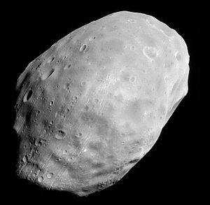

.svg)
Satélites Naturais
Fobos
Fobos ou Phobos é um dos dois satélites naturais de Marte. É o maior e mais próximo satélite natural de Marte. Com um raio médio de 11,1 km, Fobos é 7,4 vezes mais massivo que a outra lua marciana Deimos. Fobos foi descoberto por Asaph Hall em 18 de Agosto de 1877, justamente seis dias após a descoberta de seu parceiro Deimos. Seu nome vem da Grécia antiga e significa medo. Na mitologia grega, Fobos era filho de Ares (Marte na mitologia romana) e Afrodite.
Fobos é, em todo o Sistema Solar, o satélite que orbita mais próximo do planeta-mãe: menos de seis mil quilômetros acima da superfície marciana e orbita Marte três vezes ao dia. Encontra-se, por isso, abaixo da órbita síncrona para Marte. Por esse motivo, a sua órbita vai descendo a um ritmo de 1,8 m por século. Assim, dentro de 30 a 50 milhões de anos pode ocorrer uma de duas coisas: ou Fobos se despenha sobre Marte ou, o que é mais provável, antes que isso aconteça as forças gravitacionais destruirão o satélite criando um anel à volta de Marte. Também por conta de sua proximidade, ela orbita mais rápido do que a rotação marciana, o que a faz "nascer" e se pôr três vezes por dia.
Fobos demora cerca de 7,65 horas a completar uma volta sobre si próprio, que corresponde ao mesmo tempo que leva a completar uma volta ao redor de Marte. Como consequência disso, Fobos tem sempre a mesma face voltado para Marte.
